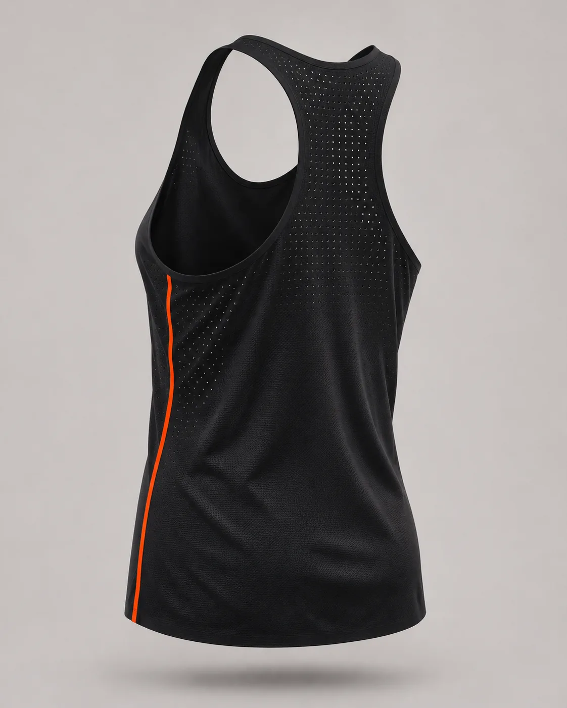
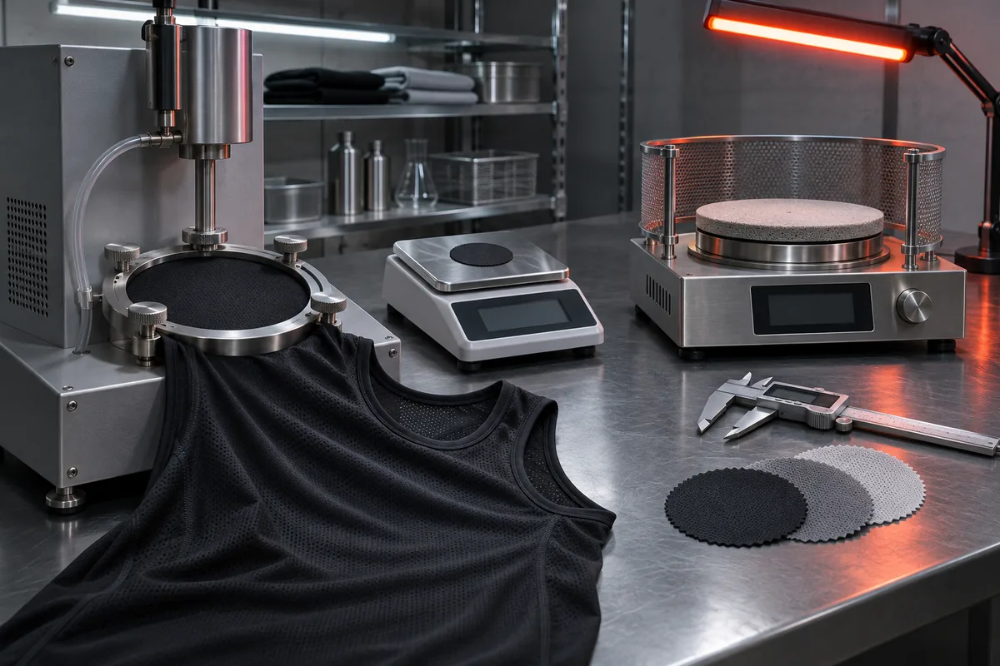

NEGATIVE SPLIT CLUB · RACING LINE PROPOSAL
NESCL R
레이싱 라인
기존 스타일 라인은 유지합니다. 그 옆에 원단 중량, 통기도, 증발저항을 공개하는 레이스용 라인을 두는 안입니다.
R-01 SINGLET 95 · FABRIC WEIGHT
95g/m²
ASTM D3776

- CFM통기도
- 190
- ASTM D737 · 125 Pa
- MVTR투습도
- 24,000g/m²/24h
- JIS L 1099 B-1
- RET증발저항
- 2.4m²·Pa/W
- ISO 11092
- CLO보온
- 0.06
- ISO 15831
- 제품 무게 (M)
- 68g
- S 64 · L 73 · XL 78
- 권장 기온
- 12~30°C
- TEMPO RUN
01
상세페이지 정보 비교
국내 러닝 브랜드의 상세페이지는 대부분 소재명과 느낌을 설명합니다. 원단 중량, 통기도, 권장 기온은 공개하지 않거나 문의해야 확인할 수 있습니다.
| 항목 | 일반적인 상세페이지 (예시 문구) | NESCL R 상세페이지 (안) · R-01 Singlet 95 | 시험 방법 |
|---|---|---|---|
| 원단 중량 | "초경량 원단" | 95g/m² | ASTM D3776 |
| 통기도 | "뛰어난 통기성" | 190CFM | ASTM D737 · 125 Pa |
| 증발저항 | "쾌적한 착용감" | 2.4m²·Pa/W | ISO 11092 |
| 건조 시간 | "땀이 빠르게 마르는 소재" | 21분 | AATCC 201 |
| 권장 기온 | "사계절 착용 가능" | 12~30°C | TEMPO RUN |
| 제품 무게 | 표기 없음 | 68g (M) | S 64 · L 73 · XL 78 |
대형 아웃도어 브랜드도 소재명(예: 프리마로프트 액티브 이볼브)까지만 표기하고, 중량은 고객센터 문의로 확인해야 했습니다. 원단사 시험성적서에 있는 수치를 상세페이지에 옮기는 것만으로도 국내 러닝 브랜드 중에서는 드문 사례가 됩니다.
02
NESCL과 NESCL R
도요타는 양산차 라인을 유지하면서 GAZOO Racing(GR)을 운영합니다. 모터스포츠에서 검증한 기술은 양산차에 적용됩니다. 네스클에도 같은 구조를 제안합니다.
Toyota : GAZOO Racing = NESCL : NESCL R
| NESCL | NESCL R | |
|---|---|---|
| 역할 | 시티 러닝 · 스타일 라인 | 레이스 · 퍼포먼스 라인 |
| 제품 | 타이다잉, 마블, 컬러웨이 유지 | 싱글렛, 후드슬리브, 윈드쉘, 하프타이츠 |
| 사용 장면 | 크루 러닝, 데일리 조깅 | 레이스, 고강도 훈련 |
| 공개 정보 | 소재명, 혼용률 (STEP 0에서 원단 중량 추가) | 전 제품 GSM, CFM, MVTR, RET, CLO와 시험 방법 |
| 공정 | 타이다잉 염색 | 본딩, 레이저 타공, 접착 테이프 솔기 |
| 운영 | 드랍, 협업, 커뮤니티 | 한정 캡슐, 서브3·울트라 러너 필드 테스트 |
| 교류 방향 | 내용 |
|---|---|
| NESCL R에서 NESCL로 | 원단·공정 적용 |
| NESCL에서 NESCL R로 | 고객 기반 |

기술 이전 예시
R-01 싱글렛의 레이저 타공 패턴을 다음 시즌 타이다잉 싱글렛에 적용하는 방식입니다. 스타일 라인 제품에는 R-Tech 태그를 붙여 출처를 표기합니다.
03
공개 항목과 기준값
상세페이지에 표기할 항목입니다. 각 항목에 정의, 단위, 시험 방법, 참고 범위를 함께 적습니다.
| 항목 | 정의 · 시험 규격 | 방향 | 기준값 |
|---|

04
NESCL R 콘셉트 4종
제품명의 숫자는 원단 중량(g/m²)입니다. 제품을 선택하면 상세 스펙이 열립니다.
05
스펙 비교
네 제품의 공통 공개 항목입니다. 같은 시험 방법으로 측정한 값끼리 비교합니다.
시험 방법: 원단 중량 ASTM D3776 (니트) · ISO 3801 (직물) · 통기도 ASTM D737 (125 Pa) · 투습도 JIS L 1099 B-1 · 증발저항 ISO 11092 · 보온 ISO 15831 서멀 마네킹 기반 기여값 (근사, ±0.03). 권장 기온은 단독 착용, 템포런 강도 기준입니다. 수치는 예시이며 실제 시험성적서가 아닙니다.
06
기온별 레이어링
기온, 풍속, 강도, 강수 조건에 따른 권장 조합과 합산 CLO.
체감 기온은 기상청 겨울철 체감온도 산식(기온 10°C 이하, 풍속 1.3 m/s 이상)을 적용했습니다. 강도 보정(이지런 0, 템포런 +5, 레이스 +9°C)과 강수 보정(−3°C)은 가정값입니다. CLO는 레이어별 근사값의 단순 합산이며 액세서리는 제외합니다. 제품별 권장 기온은 단독 착용, 템포런 기준이며 레이스 강도에서는 4°C 낮게 적용됩니다.
07
단계별 실행안
기존 제품의 스펙 공개에서 시작해 R 라인으로 확장하는 4단계입니다.
0
추가 비용 최소
기존 제품 스펙 공개
템프 발란스 후드슬리브, 그리드 벤틸 후드슬리브, 제로쉘 타이다잉 SL 바람막이 상세페이지에 원단 중량(GSM), 혼용률, 원단사 정보를 표로 추가합니다. 원단사 시험성적서의 수치를 그대로 사용합니다.
1
캡슐
R 캡슐 2~3종 한정 출시
싱글렛, 하프타이츠처럼 스펙 차이가 분명한 품목부터 시작합니다. 춘천마라톤, JTBC 서울마라톤 시즌에 맞춰 출시하고, 서브3 크루가 필드 테스트를 진행합니다.
2
테스트
테스트 결과 공개
필드 테스트 결과(예: 테스터 12명, 35 km 지점 쓸림 0건)와 세탁 50회 후 회복률 같은 내구성 데이터를 저널로 발행합니다.
3
기술 이전
R 기술의 스타일 라인 적용
검증한 원단과 공정을 타이다잉 라인에 적용하고, 해당 제품에 R-Tech 태그를 표기합니다.
08
스펙 공개 사례
제품 스펙을 수치로 공개하는 브랜드와 각 브랜드의 표기 항목입니다.
- WISE울트라러닝 브랜드. 제품명에 수치 사용(T-shirt 230, Legging 550). 원단 중량, 신장률, CLO, 제품 무게, 패킹 부피를 상세페이지에 표기.wiseultrarunning.com
- Vollebak소재 중심 제품 설명. 혼용률을 1% 단위까지 표기하고 원단 중량(g/m²)을 공개.vollebak.com
- SOAR Running용도별 컬렉션 구성(Race, Run, Trail, Hot Weather). 실험 라인 ProtoLab을 별도로 운영.soarrunning.com
- Outlier원단별 전용 페이지. 원단 중량, 혼용률, 신장률, 원단 생산지를 표로 표기.outlier.nyc
- Rapha Pro Team저지별 권장 기온 표기(예: 6~20°C). 제품명에 무게 등급(Lightweight, Midweight) 포함.rapha.cc
- Arc'teryx구성, 소매, 핏, 원단 처리를 항목별로 묶은 스펙 목록. 전 제품 동일한 형식.arcteryx.com